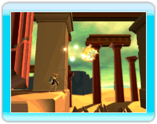
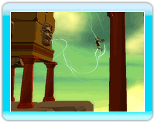
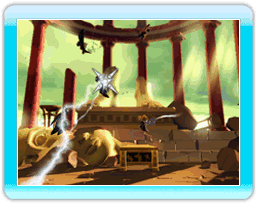

10 |
神の力 |
 |
冒険を見守るオリンポスの神々は、ニックスの行く先々で「神の力」を与えてくれます。 |
「テレキネシス」 初めにゼウスに出会うとテレキネシスが使えるようになります。カーソルをブロック・火の玉・柱などのオブジェクトにポイントしながらＢボタンでつかむことが出来ます。テレキネシスは一定時間、発動することが出来ます。 |
 「風の力」 アイオロスが風の向きを変化させる力を与えてくれます。ポインターを「風の吹き出し口」に合わせてBボタンを押しながら風の軌跡を描いてください。Ｚボタンを押しながら風に乗ることで遠くまで飛べるようになります。 |
 「光の力」 「神のいかずち」を発して敵や障害物を壊すことが出来ます。ポインターを敵やヒビの入ったオブジェクトに合わせBボタンを押して攻撃してください。 |
 |
 |
 |